Superior Foes of Spider-Man (2013 - 2014)
| Comic Book | Release Date | Cover |
|---|---|---|
| Superior Foes of Spider-Man #1 | 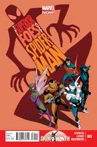 | |
| Superior Foes of Spider-Man #2 | 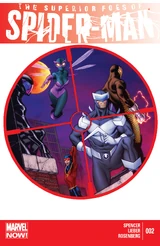 | |
| Superior Foes of Spider-Man #3 | 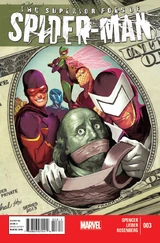 | |
| Superior Foes of Spider-Man #4 | 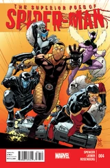 | |
| Superior Foes of Spider-Man #5 | 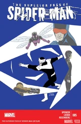 | |
| Superior Foes of Spider-Man #6 | 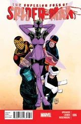 | |
| Superior Foes of Spider-Man #7 The Crime of the Century, Part 1 | 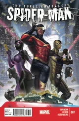 | |
| Superior Foes of Spider-Man #8 The Crime of the Century, Part 2 | 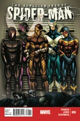 | |
| Superior Foes of Spider-Man #9 The Crime of the Century, Part 3 | 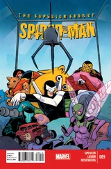 | |
| Superior Foes of Spider-Man #10 Filling in | 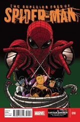 | |
| Superior Foes of Spider-Man #11 | 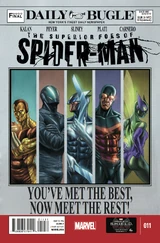 | |
| Superior Foes of Spider-Man #12 Hammerhead of the Family | 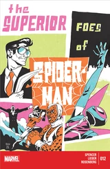 | |
| Superior Foes of Spider-Man #13 Supposed to be art | 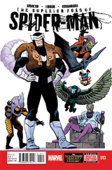 | |
| Superior Foes of Spider-Man #14 | 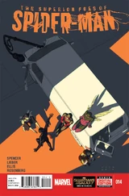 | |
| Superior Foes of Spider-Man #15 | 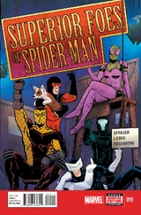 | |
| Superior Foes of Spider-Man #16 | 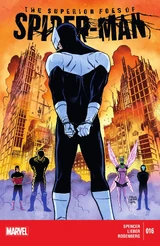 | |
| Superior Foes of Spider-Man #17 Goodbye, Farewell and Good Riddance | 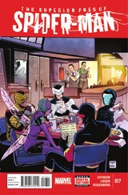 |